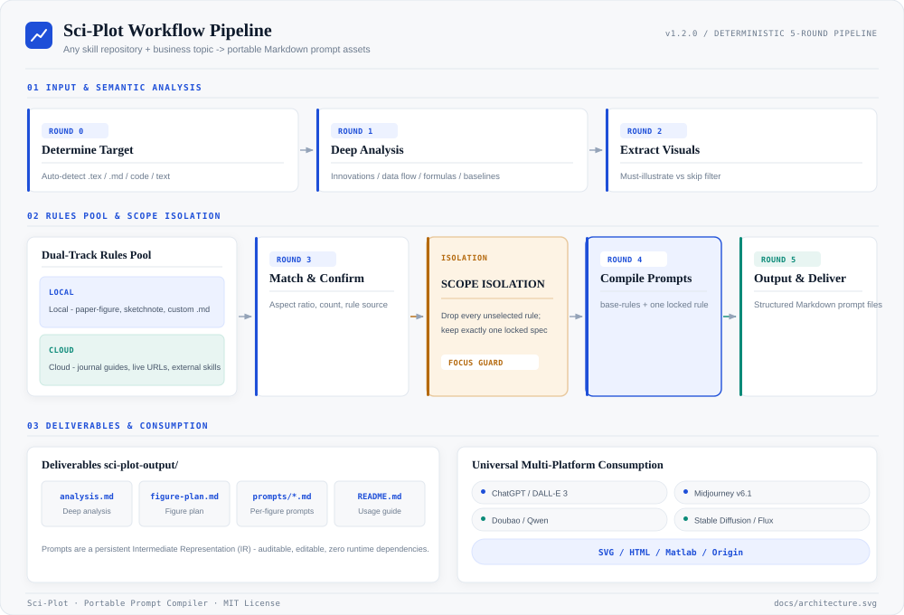

From Academic Papers to
Publication-Grade Figures
Sci-Plot is an agentic scientific illustration engine. It systematically ingests complex research papers, enforces mathematical scope isolation, matches domain-specific aesthetic rules, and compiles cross-platform prompt blueprints for AI generators and Python renderers.
Architected for Academic Rigor
Unlike superficial image prompts, Sci-Plot implements systematic compiler guarantees, strict isolation boundaries, and automated quality gates.
5-Round Deterministic Pipeline
Executes paper ingestion, concept extraction, layout structuring, multi-platform synthesis, and QA gate verification in strictly ordered phases.
Strict Scope Isolation
Imposes hard caps (≤10 pages / ≤15k tokens) to prevent context saturation. Isolates appendices, proofs, and references from diluting key figures.
Universal Harvester & Radar
Automatically harvests top-ranked scientific prompt styles and layout taxonomies from leading open-source repositories and cloud catalogs.
Multi-Platform Prompt Compiler
Transforms semantic scene graphs into native parameters for Midjourney v6.1, DALL-E 3, Doubao, Stable Diffusion, and executable Python Matplotlib scripts.
Publication Typography & Palettes
Adheres to Nature, Science, and IEEE typography standards with accessible color-blind safe palettes (Viridis, ColorBrewer, Tol bright).
4-Tier Automated Quality Gate
Comprehensive test suite verifies prompt token limits, cloud downloader integrity, end-to-end simulations, and radar scanners before distribution.
System Panorama & Structural Views
Explore the live, interactive architecture generated via tt-a1i/archify. Switch between views to inspect components, execution sequence, and data flow.
docs/archify/*.html
Static System Architecture Overview

Standard vector architecture diagram linking Core Pipeline, Dual-Track Pool, Harvester, and Platform Renderers.
The 5-Round Deterministic Pipeline
Every figure generation passes through 5 strictly structured rounds to ensure complete scientific fidelity.
Paper Ingestion & Scope Isolation
Loads source PDF, LaTeX, or Markdown. Enforces a strict ceiling of ≤10 pages and ≤15,000 tokens. Strips bibliographies, boilerplate references, and secondary appendices to prevent cognitive drift.
Concept Extraction & Dual-Track Pool Matching
Identifies core hypotheses, algorithmic workflows, neural architectures, or experimental comparisons. Matches domain characteristics against the curated Rules Pool (Core + Community tracks).
Figure Planning & Visual Hierarchy
Structures visual hierarchy, sub-figure arrangements (Figure 1A, 1B, 1C), visual focal points, flow directions, and color harmony matrices following Nature/Science publication criteria.
Multi-Platform Prompt Compilation
Compiles the abstract figure plan into native dialect prompts: Midjourney (parameters, lighting, camera angle), Doubao/DALL-E 3 (compositional narrative), and Matplotlib (reproducible Python code).
4-Tier QA Verification & Delivery
Validates compliance: zero hallucinated terms, correct aspect ratios, palette accessibility, text legibility, and executable renderer scripts.
5 Built-in Aesthetic Presets
Tailored visual grammars for academic papers, thesis defenses, conference slides, and research monographs.
Standard academic publication style. Crisp vector lines, high-contrast typography, formal layout, minimal ornamentation.
Refined minimalist aesthetic. Thin borders, generous whitespace, monochrome primary with subtle single-hue focal highlights.
Hand-drawn cognitive visual note. Ideal for conference slides, overview posters, educational tutorials, and keynote presentations.
Warm parchment aesthetic. Organic earth tones, gentle gradients, comfortable for deep reading and study guides.
Executive technology whitepaper style. Sophisticated dark/light corporate palettes, modular cards, high-density data layouts.
Clean, Modular Codebase
An organized layout separating core agent skills, ingestion scripts, interactive Archify deliverables, and verification suites.
Triggering Sci-Plot
Seamlessly invoke the skill from Antigravity, Claude Code, or any LLM agent CLI.
# Natural language invocation with your target paper
"Please use the sci-plot skill to parse my paper at ./paper.pdf,
generate publication-grade figures in 'paper-figure' style,
and produce prompt files for both Midjourney and Matplotlib."# Run full regression test suite
python tests/run_all_tests.py
# Ingest and update latest community scientific visualization rules
python scripts/universal_skill_harvester.py https://github.com/Yuan1z0825/nature-skillsProject Documentation Hub
Access complete project documentation, bilingual guides, contribution standards, and release logs.
Frequently Asked Questions
What is the difference between Sci-Plot and generic image generators?
Generic generators invent pseudo-scientific gibberish labels and incorrect topologies. Sci-Plot extracts the real mathematical scene graph, enforces scope boundaries, and compiles tailored instructions that maintain factual fidelity.
How does Scope Isolation protect my figure quality?
By enforcing a 10-page / 15k token ceiling and isolating secondary appendices, Sci-Plot prevents the LLM from becoming overwhelmed by tangential proofs and ensures attention is focused entirely on the core thesis.
Can I run the generated figures locally without cloud AI?
Yes! Sci-Plot generates executable Python Matplotlib/Seaborn scripts alongside generative AI prompts, allowing 100% offline, reproducible vector PDF/SVG rendering.
How do I deploy this overview page to GitHub Pages?
Simply go to repository Settings → Pages → Build and deployment → Source: Deploy from a branch → Branch: main, Folder: /docs. The included docs/.nojekyll and relative asset paths ensure instant, zero-configuration deployment.